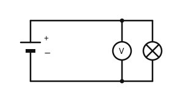

Die Spannung
Mit einem KI-Tutor lernen
Ein KI-Tutor erklärt dir diese Seite und hilft dir bei den Übungen. Wähl deinen Assistenten:
Mit Claude öffnen Mit ChatGPT öffnen Mit Mistral Vibe öffnen
Du nutzt dein eigenes Konto beim Anbieter. Der Assistent ist kein Angebot von lernapps.net: lernapps liefert nur Inhalte und Übungen. Die Wahl gilt für alle Seiten, nur auf diesem Gerät.
Was treibt den Strom an?
In einem Stromkreis fließt Strom nur, wenn etwas ihn antreibt. Das ist die Spannungsquelle, zum Beispiel eine Batterie. Wie stark sie antreibt, sagt die Spannung.
Spannung in Volt
- Spannung
Die Spannung ist der Antrieb des Stroms. Man misst sie in Volt (V).
Je größer die Spannung, desto stärker treibt die Quelle den Strom an. Für kleine Spannungen nimmt man Millivolt (mV), für große Kilovolt (kV).
Ein Vergleich hilft: Stell dir einen Wasserkreislauf vor. Eine Pumpe treibt das Wasser durch ein Rohr, und es dreht ein Wasserrad. Die Pumpe entspricht der Batterie, das Wasserrad der Lampe, das Wasser dem Strom. Je stärker die Pumpe drückt, desto mehr Wasser fließt. Entsprechend treibt eine größere Spannung mehr Strom an.

Pumpe und Batterie treiben an, Wasserrad und Lampe werden angetrieben.
Quelle: eigene Zeichnung. Lizenz: CC-BY-4.0.Grenzen des Vergleichs
Der Vergleich passt nur zum Teil. Wasser ist ein Stoff, den man sehen kann. Der Strom fließt durch die Leitung und durch die Lampe, und er wird dabei nicht weniger. Die Spannung dagegen fließt nicht: Sie liegt an der Lampe an, und der Strom fließt durch sie.
Umrechnen von Spannungen
Millivolt und Kilovolt
Ein Messwert von sind . Eine Überlandleitung mit hat .
Übung
Übung
Drei Beispielaufgaben, jede mit ihrer Lösung:
Aufgabe Nr. 1
Ein Messgerät zeigt 500 mV. Wie viel Volt sind das?
Tipp
1 V sind 1000 mV. Du rechnest von der kleinen zur großen Einheit, also teilst du durch 1000.
Lösung
Richtige Antwort: 0,5 V
Aufgabe Nr. 2
Ein Messgerät zeigt 2500 mV. Wie viel Volt sind das?
Tipp
1 V sind 1000 mV. Du rechnest von der kleinen zur großen Einheit, also teilst du durch 1000.
Lösung
Richtige Antwort: 2,5 V
Aufgabe Nr. 3
Ein Messgerät zeigt 1500 mV. Wie viel Volt sind das?
Tipp
1 V sind 1000 mV. Du rechnest von der kleinen zur großen Einheit, also teilst du durch 1000.
Lösung
Richtige Antwort: 1,5 V
Übung
Drei Beispielaufgaben, jede mit ihrer Lösung:
Aufgabe Nr. 1
Eine Spannung beträgt 1 kV. Wie viel Volt sind das? Schreibe die Zahl ohne Punkt.
Tipp
1 kV sind 1000 V. Du rechnest von der großen zur kleinen Einheit, also mal 1000.
Lösung
Richtige Antwort: 1.000 V
Aufgabe Nr. 2
Eine Spannung beträgt 2 kV. Wie viel Volt sind das? Schreibe die Zahl ohne Punkt.
Tipp
1 kV sind 1000 V. Du rechnest von der großen zur kleinen Einheit, also mal 1000.
Lösung
Richtige Antwort: 2.000 V
Aufgabe Nr. 3
Eine Spannung beträgt 10 kV. Wie viel Volt sind das? Schreibe die Zahl ohne Punkt.
Tipp
1 kV sind 1000 V. Du rechnest von der großen zur kleinen Einheit, also mal 1000.
Lösung
Richtige Antwort: 10.000 V
Übung
Lösung
Richtige Antwort: Die Aussage stimmt nicht.
Durch die Lampe fließt der Strom. Die Spannung liegt an der Lampe an und treibt den Strom an.
Mehr dazu:
Übung
Lösung
der Batterie, die den Strom antreibt. richtige Antwort
Pumpe und Batterie treiben beide an.
der Lampe, die etwas antreibt.
Das Wasserrad entspricht der Lampe, nicht die Pumpe.
dem Schalter, der den Weg öffnet.
Der Schalter hat keine Pumpe als Gegenstück. Er entspräche einem Absperrhahn im Rohr.
Die Pumpe treibt das Wasser an, die Batterie den Strom.
Mehr dazu:
Übung
Lösung
Sie ist der Antrieb für den Strom und wird in Volt gemessen. richtige Antwort
Je größer die Spannung, desto stärker wird der Strom angetrieben.
Sie gibt an, wie viel Strom fließt, und wird in Ampere gemessen.
Das beschreibt die Stromstärke, nicht die Spannung.
Sie wird in der Lampe aufgebraucht, bis keine mehr da ist.
Die Spannung der Quelle bleibt bestehen, solange die Batterie nicht leer ist.
Spannung in Volt ist der Antrieb, Stromstärke in Ampere zeigt, wie viel Strom fließt.
Mehr dazu: